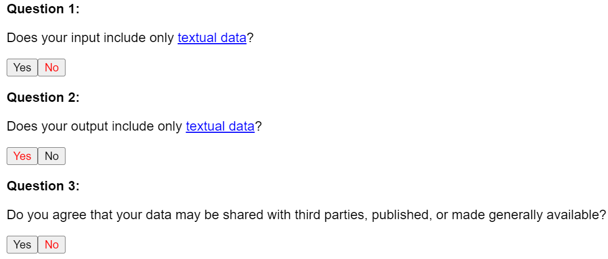
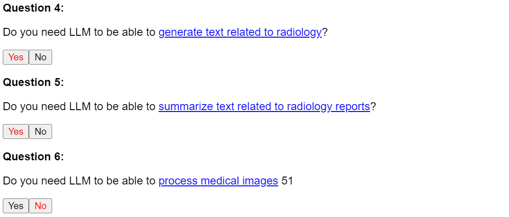
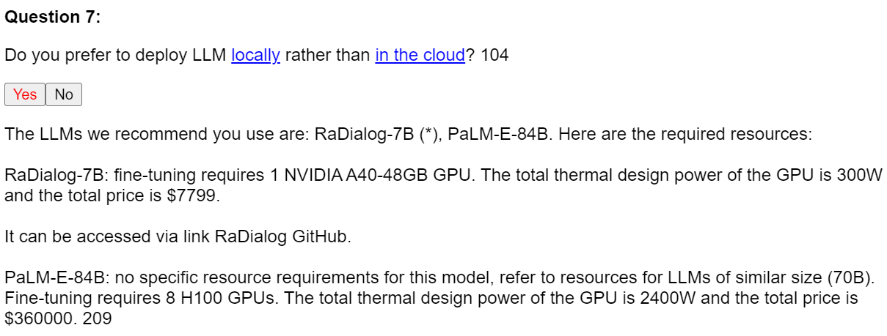
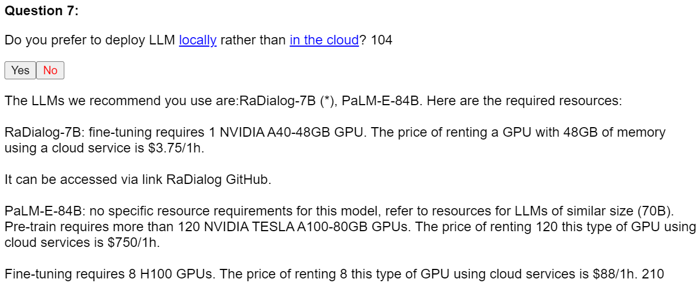

First step: determine clinical workflow stage. First of all, you need to determine in which stage you want to use LLMs or to which stage the tasks you want LLM to assist belongs. For example, if you are a radiologist and you want to use LLM when writing radiology reports, then you should choose stage II; if you are a clinician and you want to use LLM when diagnosing patients, then you should choose stage III.
Second step: answer the questionnaire based on your situation. After selecting the stage, you can answer our questionnaire to get the name and model information of the recommended LLMs to use. Blue text that appears in a question indicates that a specific explanation is available by clicking on that text. The explanation will appear at the bottom of the page and can be closed by clicking red `close' in the explanation. Here we use stage II as an example, which we hope will help you understand.
Example: If I am a radiologist, I would like to use LLMs in stage II to assist me in my work. I would probably want LLMs to assist me with radiology exams and report generation. Since all radiology reports contain medical images, I choose `No' for question 1. Because I only want to generate some text related to radiology reports, I choose `Yes' for question 2. Because I want to enter data that contains the patient's personal data, I choose `No' for question 3. Questions 4-6 are chosen by their own situation, here I have chosen `Yes' for question 4, `Yes' for question 5 and `No' for question 6.


Question 7 provides two scenarios of local deployment and cloud deployment, which can be chosen according to the resources you have. We suggest that generally using cloud services during the pre-training or fine-tuning phase can significantly reduce the demand for computing resources and money, and that local deployment is more economically sustainable during the inference phase.


Third step: get answers to your questionnaire. Once the selection is complete you can get the LLMs that fulfill the conditions and their specific information. The information typically includes the name (+ size) of the LLMs recommended for use, the LLM's GPU memory requirements, energy consumption, and price, and may also contain a link to the LLM access.
If you need to change your answer to a question, you can simply go back to the question and select another option, and the subsequent questions will reappear.
If an answer has an LLM followed by an `(*)' sign, this indicates that papers reported (not necessarily the same papers) that the LLM was the best performing LLM in the selected condition. e.g. there may be three different papers reporting the same LLM as the best performing model in three different clinical tasks, so when `Yes' is selected for all three clinical tasks, the answer will have the name of that LLM followed by the `(*)'. Those without the `(*)' are simply LLMs that satisfy the selected condition.
Any links (GitHub) present in the answer can be accessed by clicking on them.
Please note that all data involved within this selection tool is derived from the reported content of the collected papers and should only be used as a reference for the selection of LLMs. Price data may change over time and access.